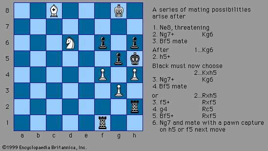

chess, one of the oldest and most popular board games, played by two opponents on a checker board with specially designed pieces of contrasting colours, commonly white and black. White moves first, after which the players alternate turns in accordance with fixed rules, each player attempting to force the opponent’s principal piece, the King, into checkmate—a position where it is unable to avoid capture. Chess first appeared in India about the 6th century AD and by the 10th century had spread from Asia to the Middle East and Europe. Since at least the 15th century, chess has been known as the “royal game” because of its popularity among the nobility. Rules and set design slowly evolved until both reached today’s standard in the early 19th century. Once an intellectual diversion favoured by the upper classes, chess went through an explosive growth in interest during the 20th century as professional and state-sponsored players competed for an officially recognized world championship title and increasingly lucrative tournament prizes. Organized chess tournaments, postal correspondence games, and Internet chess now attract men, women, and children around the world. This article provides an in-depth review of the history and the theory of the game by noted author and international grandmaster Andrew Soltis. For a chronological list of world champions since the mid-19th century, featuring direct links to biographical articles, see the table of world chess champions.
Chess is played on a board of 64 squares arranged in eight vertical rows called files and eight horizontal rows called ranks. These squares alternate between two colours: one light, such as white, beige, or yellow; and the other dark, such as black or green. The board is set between the two opponents so that each player has a light-coloured square at the right-hand corner. Algebraic notation Individual moves and entire games can be recorded using one of several forms of notation. By far the most widely used form, algebraic (or coordinate) notation, identifies each square from the point of view of the player with the light-coloured pieces, called White. The eight ranks are numbered 1 through 8 beginning with the rank closest to White. The files are labelled a through h beginning with the file at White’s left hand. Each square has a name consisting of its letter and number, such as b3 or g8. Additionally, files a through d are referred to as the queenside, and files e through h as the kingside. See Figure 1. Moves The board represents a battlefield in which two armies fight to capture each other’s king. A player’s army consists of 16 pieces that begin play on the two ranks closest to that player. There are six different types of pieces: king, rook, bishop, queen, knight, and pawn; the pieces are distinguished by appearance and by how they move. The players alternate moves, White going first. King White’s king begins the game on e1. Black’s king is opposite at e8. Each king can move one square in any direction; e.g., White’s king can move from e1 to d1, d2, e2, f2, or f1. Rook Each player has two rooks (formerly also known as castles), which begin the game on the corner squares a1 and h1 for White, a8 and h8 for Black. A rook can move vertically or horizontally to any unobstructed square along the file or rank on which it is placed. Bishop Each player has two bishops, and they begin the game at c1 and f1 for White, c8 and f8 for Black. A bishop can move to any unobstructed square on the diagonal on which it is placed. Therefore, each player has one bishop that travels only on light-coloured squares and one bishop that travels only on dark-coloured squares. Queen Each player has one queen, which combines the powers of the rook and bishop and is thus the most mobile and powerful piece. The White queen begins at d1, the Black queen at d8. Knight Each player has two knights, and they begin the game on the squares between their rooks and bishops—i.e., at b1 and g1 for White and b8 and g8 for Black. The knight has the trickiest move, an L-shape of two steps: first one square like a rook, then one square like a bishop, but always in a direction away from the starting square. A knight at e4 could move to f2, g3, g5, f6, d6, c5, c3, or d2. The knight has the unique ability to jump over any other piece to reach its destination. It always moves to a square of a different colour. Capturing The king, rook, bishop, queen, and knight capture enemy pieces in the same manner that they move. For example, a White queen on d3 can capture a Black rook at h7 by moving to h7 and removing the enemy piece from the board. Pieces can capture only enemy pieces. Pawns Each player has eight pawns, which begin the game on the second rank closest to each player; i.e., White’s pawns start at a2, b2, c2, and so on, while Black’s pawns start at a7, b7, c7, and so on. The pawns are unique in several ways. A pawn can move only forward; it can never retreat. It moves differently than it captures. A pawn moves to the square directly ahead of it but captures on the squares diagonally in front of it; e.g., a White pawn at f5 can move to f6 but can capture only on g6 or e6. An unmoved pawn has the option of moving one or two squares forward. This is the reason for another peculiar option, called a passant—that is, in passing—available to a pawn when an enemy pawn on an adjoining file advances two squares on its initial move and could have been captured had it moved only one square. The first pawn can take the advancing pawn a passant, as if it had advanced only one square. A passant capture must be made then or not at all. Only pawns can be captured a passant. The last unique feature of the pawn occurs if it reaches the end of a file; it must then be promoted to—that is, exchanged for—a queen, rook, bishop, or knight. Castling The one exception to the rule that a player may move only one piece at a time is a compound move of king and rook called castling. A player castles by shifting the king two squares in the direction of a rook, which is then placed on the square the king has crossed. For example, White can castle kingside by moving the king from e1 to g1 and the rook from h1 to f1. Castling is permitted only once in a game and is prohibited if the king or rook has previously moved or if any of the squares between them is occupied. Also, castling is not legal if the square the king starts on, crosses, or finishes on is attacked by an enemy piece. Relative piece values Assigning the pawn, a value of 1, the values of the other pieces are approximately as follows: knight 3, bishop 3, rook 5, and queen 9. The relative values of knights and bishops vary with different pawn structures. Additionally, tactical considerations may temporarily override the pieces’ usual relative values. Material concerns are secondary to winning.
When a player moves a piece to a square on which it attacks the enemy king—that is, a square from which it could capture the king if the king is not shielded or moved—the king is said to be in check. The game is won when one king is in check and cannot avoid capture on the next move; this is called checkmate. A game also can end when a player, believing the situation to be hopeless, acknowledges defeat by resigning. There are three possible results in chess: win, lose, or draw. There are six ways a draw can come about: (1) by mutual consent, (2) when neither player has enough pieces to deliver checkmate, (3) when one player can check the enemy king endlessly (perpetual check), (4) when a player who is not in check has no legal move (stalemate), (5) when an identical position occurs three times with the same player having the right to move, and (6) when no piece has been captured and no pawn has been moved within a period of 50 moves. In competitive events, a victory is scored as one point, a draw as half a point, and a loss as no points. Game notation A move can be recorded by designating the initial of the piece moved and the square to which it moves. For example, Be5 means a bishop has moved to e5. There are two exceptions: a knight is identified by N, and no initials are used for pawn moves. For example, 1 e4 means White’s first move is a two-square advance of a pawn on the e-file, and 1 . . . Nf6 means Black’s response is to bring a knight from g8 to f6. For both White and Black, castling kingside is indicated by 0-0, while castling queenside is notated by 0-0-0. Captures are indicated by inserting an x or: between the piece moving and the square it moves to. For pawn moves, this means dxe5 indicates a White pawn on d4 captures a piece on e5. End passant captures are designated by e.g., Checks are indicated by adding Ch or + at the end of the move, and checkmate is often indicated by adding # or ++ at the end of the move. Notation is used to record games as they are played and to analyse them in print afterward. In annotating (commenting) on a game, an appended exclamation mark means a very good move, two exclamation marks are occasionally used to indicate an extremely good move, a question mark indicates a bad move, two question marks indicate a blunder, and the combination of an exclamation mark and a question mark on the same move indicates a double-edged or somewhat dubious move.
Competitive chess is played according to a set of rules that supplement the basic laws governing how the pieces move. Among the more important rules are those governing completion of a move, recording of games, time controls (see The time element and competition), and penalties for illegal moves and other infractions. Tournament and match chess is distinguished from casual games by the strict provisions for completing a move. Unless preceded by the warning “I adjust” (French: “j’adoube”), a piece touched must be moved or captured (if legally possible), and a completed move may not be retracted. The players also are obligated to record their moves. Only after making a move can, they stop their allotted time from elapsing, usually by depressing a device on the chess clock used in competitive play. A player can be penalized in a variety of ways, including forfeiture of the game, for consulting another player or any recorded material during the game, for analysing the game on another board, or for distracting the opponent. Any player who realizes during a game that an illegal move has been made may demand that the position before the infraction be reinstated and that play proceed from there. If the illegality is discovered after the game is completed, the result stands without penalty.
Ancient precursors and related games
The origin of chess remains a matter of controversy. There is no credible evidence that chess existed in a form approaching the modern game before the 6th century CE. Game pieces found in Russia, China, India, Central Asia, Pakistan, and elsewhere that have been determined to be older than that are now regarded as coming from earlier distantly related board games, often involving dice and sometimes using playing boards of 100 or more squares.
One of those earlier games was a war game called chaturanga, a Sanskrit name for a battle formation mentioned in the Indian epic Mahabharata. Chaturanga was flourishing in north-western India by the 7th century and is regarded as the earliest precursor of modern chess because it had two key features found in all later chess variants—different pieces had different powers (unlike checkers and go), and victory was based on one piece, the king of modern chess.
How chaturanga evolved is unclear. Some historians say chaturanga, perhaps played with dice on a 64-square board, gradually transformed into Shatranj (or chatrang), a two-player game popular in northern India, Pakistan, Afghanistan, and southern parts of Central Asia after 600 CE. Shatranj resembled chaturanga but added a new piece, a firzān (counsellor), which had nothing to do with any troop formation. A game of Shatranj could be won either by eliminating all an opponent’s pieces (baring the king) or by ensuring the capture of the king. The initial positions of the pawns and knights have not changed, but there were considerable regional and temporal variations for the other pieces.
The game spread to the east, north, and west, taking on sharply different characteristics. In the East, carried by Buddhist pilgrims, Silk Road traders, and others, it was transformed into a game with inscribed disks that were often placed on the intersection of the lines of the board rather than within the squares. About 750 CE chess reached China, and by the 11th century it had come to Japan and Korea. Chinese chess, the most popular version of the Eastern game, has 9 files and 10 ranks as well as a boundary—the river, between the 5th and 6th ranks—that limits access to the enemy camp and makes the game slower than its Western cousin.
Rules
Chess compositions are created positions in which one side, usually White, moves first and is required to perform a task. The reader is called upon to find the task’s solution. There are three basic forms of composition depending on the type of task.
In studies, White is asked to reach a desired result, either a clear winning or drawn position, in an indeterminate number of moves. In problems, White is asked to force checkmate in a specific number of moves. Black is required to put up the best defines in the solutions of both studies and problems. In the third category, heterodox problems and related retrograde analysis, the reader is asked to perform unusual tasks.
In each case, criteria such as originality, difficulty, beauty, and the absence of extraneous pieces distinguish good compositions from great and poor ones. Also, the existence of a second solution, or cook, sharply reduces the quality of a composition. Under these and other criteria, composers of studies and problems have competed in organized tournaments since the middle of the 19th century. The world chess federation, FIDE, awards the titles of International Master and International Grandmaster of Chess Composition based on having studies and problems published in the FIDE albums.
Studies
Composed studies are usually positions with a small number of pieces and may resemble an endgame from actual play. A position always is accompanied by a stipulation, either “White to play and win” or “White to play and draw.” There is no time limit on achieving a position that is objectively won or drawn.
Such a won position is not necessarily one leading to immediate checkmate but one with a prohibitively large advantage of material for White. A drawn position may be one in which Black lacks enough material to win or in which White has created an impenetrable fortress for his pieces or has obtained some kind of positional advantage, such as the ability to give perpetual check, that prevents Black from winning. Solutions are often elaborate. Some compositions beginning with a bare minimum of pieces involve a solution of more than 20 moves.
The first studies, called manṣūbāt and dating from Arabic and Persian manuscripts, were intended to instruct players on how to win endgames. Themes of instructional studies, such as the pursuit of more than one aim at a time, are often used in practical play to turn what otherwise would be a draw or loss into a win. Highly praised studies have been composed with a minimum of material, such as two kings and only two or three pawns. (See the composition.)
White to play and draw, a chess composition by Richard Réti (c. 1922) Initially it appears that White is lost because the Black pawn can outrace the White king to its queening square at h1, while the Black king can easily intercept the White pawn on its way to its queening square at c8. However, by moving the White king diagonally, and thus closer at each move to both pawns, White can eventually force Black to choose between losing the Black pawn or stopping the White pawn. In either case (no pawns or two queens), the result is a theoretical draw.
Encyclopædia Britannica, Inc.
Studies have also been based on arresting or unusual ideas, including underpromotion, stalemate, or sacrifices. Vladimir Korolkov, a celebrated Russian composer, published a study entitled “Excelsior” in 1958 in which White wins only by making six consecutive captures by a pawn. The solution was illustrated by verses from Longfellow’s poem “Excelsior.”
Positions with practical application were known as early as the 9th century and were particularly popular in the 19th century. Many leading players were also accomplished study composers, including the world champions Max Euwe, Mikhail Botvinnik, and Vasily Smyslov, as well as Paul Keres and Jan Timman.
Standard problems
The number of pieces in a problem is small but, with the exception of miniatures, there are generally more pieces than in studies. In studies the solver usually tries to overcome the limits of material, but in problems what must be overcome is a limit of time, expressed in moves. The stipulation for these positions calls on White to mate in a set number of moves, usually two, three, or four, against the best possible Black play. (See the composition.)
White to mate in two moves, a chess composition by Henri Weenink (c. 1917). Following White's initial move (Qc4), all of Black's possible moves lead to mate in this typical example of late 19th- and early 20th-century “mate in x moves” problems.
Encyclopædia Britannica, Inc.
Problems are also distinguished from studies by their general lack of resemblance to positions that typically arise in games. Strategy and general principles play no role in problems. The first move, called the key, is rarely a check or other obvious move in modern problems, as it might be in a study. (See the composition.) In many cases the key is a waiting move—i.e., a nonchecking, noncapturing, and nonattacking move. Problem fans are often players with little or no contact with competitive chess. Only one player recognized as world champion, Adolf Anderssen, was also an accomplished problem composer.
White to mate in two moves, a chess composition by Lev Loshinsky (c. 1930). This is an early example of the modern preference for problems that begin with a subtle waiting move, known as the key, which sets up a winning move against any defines. Problem connoisseurs also value the problem's symmetrically arranged solutions.
Encyclopædia Britannica, Inc.
The criteria for problems include the originality and subtlety of an underlying idea. For example, in one of the American composer Sam Lloyd’s most famous problems (see the composition), the surprise is that White’s b-pawn, which appears to be an innocuous bystander on the second rank, advances five times and delivers mate. Also, a fine problem not only avoids superfluous pieces but also tries to get the maximum play out of the ones used. (See the composition.)
White to mate in five moves, a chess composition by Sam Loyd (c. 1861) With numerous pawns and pieces blocking the advance and promotion of White's b-pawn, it appears the least likely of White's pieces to give mate. Nevertheless, the b-pawn does deliver mate in the main line of play.
Encyclopædia Britannica, Inc.

White to play and win, a chess composition by Ghenrikh Kasparian (mid-20th century). Positional considerations—here the precariously placed Black king—can sometimes overcome material disadvantages. The main continuation of this problem features a charming sequence of White sacrifices that succeed in forcing Black to block his king's escape with his own rooks.
Encyclopædia Britannica, Inc.
By the middle of the 19th century, the modern style of problem emerged. Solutions beginning with lengthy stipulations, such as mate in seven moves, fell out of fashion. Instead, classic unifying ideas called themes—such as the Nowotny, Grimshaw, and Indian themes—were first used. (See the composition.) Composers tried to avoid duals, alternative moves by White after the first move, that fulfill the stipulation.
White to mate in three moves, a chess composition by Henry Augustus Loveday (1845). This problem was the first example of masking one piece's attack (here the bishop) with another in order to set up a “discovered” attack when the masking piece moves again. Because the author used an Indian pseudonym, Shagird, and died without publicly revealing his identity, problems using this “masking and discovery” theme became known as Indians.
Encyclopædia Britannica, Inc.
In the second half of the 19th century, English, German, and Bohemian schools of composing emerged.
Heterodox problems
The 20th century was marked by investigation of heterodox problems and greater elaboration of direct-mate problem themes. These problems, also called fairy chess, are distinguished from the orthodox problems considered so far by their unusual stipulations or by the use of nonstandard rules and pieces. Although most of the exploration of heterodox chess occurred in the 20th century, some forms are much older. The selfmate, for example, is believed to be at least 400 years old.
One such unusual stipulation is a helpmate: Black moves first and cooperates with White to get checkmated in a specified number of moves. Another is the selfmate, in which White moves first and forces Black—who is not cooperating—to deliver mate in the specified number of moves. (See the composition.) In a retractor problem the player given the task begins by taking back a move and replacing it with another move, with the aim of achieving the stipulation, such as mating in three moves. In a maximummer Black must always make the geometrically longest move available.
White to selfmate in three moves, a chess composition by Henry Wald Bettman (c. 1926).
Encyclopædia Britannica, Inc.
In retrograde analysis problems the objective is to determine how the given position was reached. (See the composition.)
White to mate in two moves, a chess composition by Thomas Raynor Dawson (c. mid-20th century). The solution of this typical retrograde analysis problem requires a careful analysis of what the preceding moves must have been in order to reach the current position.
Encyclopædia Britannica, Inc.
Other forms of heterodox problems use nonstandard pieces with nonstandard powers, such as the grasshopper, camel, zebra, and nightrider. Boards other than 8 × 8 are sometimes used.
1. Best match player
WilliamSteinitzplayed 27 chess matches from 1862 to 1896, and won 25 of the 27. He won 160 games, lost 70, and drew 57.
2. Longest game of chess (moves)
The longest tournament chess game (in terms of moves) is 269 moves (Nikolic-Arsovic, Belgrade 1989). The game ended in a draw after over 20 hours of play. 10 games have been 200 moves or over in tournament play.
3. Longest game of chess (time)
The game Stepak-Mashian, Israel 1980 was 193 moves and lasted 24 hours and 30 minutes.
4. Shortest game of chess (moves)
The quickest mate possible in chess is known as Fool’s mate (1.g4 e5 2.f3? Qh4#)
5. Longest world champion
Emanuel Lasker was world chess champion for 26 years and 337 days.
6. Biggest winning streak (consecutive wins)
Mikhail Tal played 95 consecutive tournament games without a loss (46 wins and 49 draws) in 1973-1974.
7. Most games played simultaneously
Grandmaster Susan Polgar player 326 opponents simultaneously at a shopping mall in Palm Beach Gardens, Florida on July, 2005.She won 309, drew 14, and lost 3. Her winning percentage was 96.93%.
Note: GM Ehsan Ghaem Maghami, 9-time Iran national champion, set a new world record of 604 boards for Simultaneous Chess Exhibition by an individual (Feb. 2011).
8. Oldest chess player
Jane LadyCarew (1797-1901) was a chess player who lived to 104.
As pointed out by Mr. Hugh Brodie on Facebook:
Zoltan Sarosy (Toronto, Canada) turned 107 in August (2013). He was a strong correspondence player, and apparently still follows (and occasionally plays) the game.
As pointed out by one of our readers:
Aaron Schwarzman, a strong Argentinian chess player (he was 3rd at the Argentinian Championship 1933 and 1935, and won the international Mar del Plata 1934, lived 104 years.
9. Oldest grandmaster
ArthurDake (1910-2000) was the oldest competitive chess grandmaster. He was still playing in rated chess tournaments at the age of 89.
Correction: as pointed by one of our readers: GM Enrico Paoli played his last official tournament at the age of 94.
10. Oldest world chess champion
WilliamSteinitzwas 58 years, 10 days when he lost his title to EmanuelLaskeronMay 26, 1894.
11. Biggest chess match prize
In 1992, Fischer won $3.65 million fordefeatingSpassky, who got $1.35 million in their world championship rematch. Total prize fund was $5 million.
Note: there is a confusion associated with this statement since the original Fischer-Spassky World Championship Match took place in 1972. The prize fund wasn’t nearly as big though.
12. Strongest chess computer
The strongest chess computer is Houdini, with a rating of 3300.
13. Strongest chess tournament
In 2011, the Tal Memorial in Moscow was a Category 22 tournament, with an average rating of 2776, making it the strongest tournament ever. Four players were rated 2800 or more.
14. Youngest grandmaster
SergeyKarjakin, born in 1990, became a grandmaster at the age of 12 years, 7 months. On August 20, 2002he fulfilled his 3rd and final GM norm at the international tournament inSudak.
15. Highest performance rating
Bobby Fischer had the highest performance rating of 3080 when he defeated Bent Larsen by the score of 6-0.
16. Largest age difference in the world championship match
The largest age difference in world championship matches is 32 years when Lasker, age26, played Steinitz, age 58.
17. Largest chess tournament
In 1935-36, the USSR Trade Unions chess championship was held. It had 700,000 entrants, the largest of any chess tournament.
18. Latest first capture
White made its first capture after 94 moves (Rogoff-Williams, Stockholm 1969).
19. Latest castling
In Neshewat- Garrison, Detroit1994 and Somogyi- Black, New York 2002, Black castled on the 48th move.
20 Longest chess problem
The longest solution to a composed chess problem requires 292 moves.
21. Most queens on the board
In Szalanczy-Nguyen, Budapest 2009, 6 Queens were on the board at the same time.
22. Largest rating lead
On the July 1972 FIDE rating list, Bobby Fischer’s rating of 2785 was 125 points ahead of the second-highest rated player, then-reigning World Champion Boris Spassky (2660).
23. Shortest decisive championship game
This game was played between Viswanathan Anand and Boris Gelfand in game 8 of the World Chess Championship 2012. The game lasted only 17 moves, ending with Gelfand’s resignation.
24. Highest official FIDE rating
The highest Elo rating a player has ever received from FIDE, the World Chess Federation, is 2872, which Magnus Carlsen achieved on the February 2013 list.
25. Highest ‘live rating’
Magnus Carlsen had the highest “live rating” ever at 2878.9, achieved on March 27, 2013.
For those who asked to add a blindfolded world chess record here it is:
26. Most blindfold games played simultaneously
German Marc Lang set the world record in November 2011 by playing 46 opponents simultaneously and blindfolded, with 25 wins, 19 draws and just 2 losses.